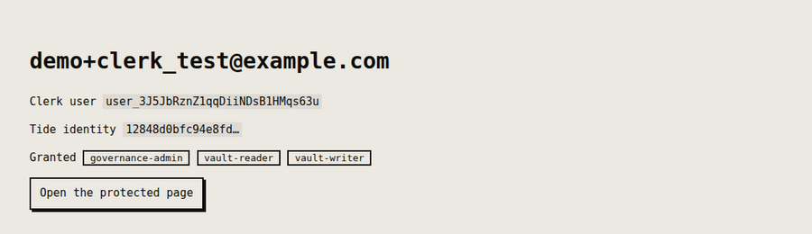

Integrations / Clerk
Clerk + minidauth keep your login, add keys nobody holds
Clerk keeps the login, including its sign-in component. minidauth adds a key that no single server holds and roles that only a quorum of your admins can grant.
Run end to end
What stays and what moves
- Stays with Clerk
- Accounts, sessions, passwords and the sign-in screen. Nothing about how your users log in changes.
- Moves to the network
- The key that encrypts and signs, which exists only as shares that 14 of 20 independent nodes have to cooperate to use, and the decision about who holds a role, which takes several of your admins approving it.
Adding it to a Clerk app
-
Store the link in
privateMetadata.tideVuidPrivate metadata rather than public, because the browser should not be able to read or write the link.
-
Add one callback route
The user links their Tide identity in a page served by the Tide network, which neither your app nor minidauth can see into. The shared
link.jsdrop-in adds the routes; you tell it who is signed in and where to store the vuid. -
Read roles from minidauth, not from Clerk
Clerk metadata can be copied into a session token, which makes it tempting to keep roles there. A role in a token your app can mint is a role your app can grant itself, so the example reads roles from minidauth on every request instead.

Clerk development instances
The Tide enclave returns to your app with a cross-site navigation, and on a Clerk development instance authenticateRequest can't identify the caller on that request (it answers dev-browser-missing). The example sets its own short-lived tide_link cookie, httpOnly and SameSite=Lax, when the link starts and reads it on the way back. It's a pattern worth keeping in production too.
Users without a Tide account
The Clerk example also mounts a /tideless page. There, the signed-in Clerk user
encrypts and decrypts with no Tide account at all: their Clerk user id is the subject, a
role the quorum granted that id is the gate, and the browser never holds a credential. It
needs a public, voucher-gated decrypt policy, which the
setup guide covers.
Run the example
Run end to end against a real Clerk application and the public Tide network: sign in, link, and a protected page that reads its answer from the grant record.
MINIDAUTH_OPS_TOKEN=<ops token> APP_URL=http://localhost:3003 \ node ../shared/register-callback.js npm install export CLERK_PUBLISHABLE_KEY=pk_test_... export CLERK_SECRET_KEY=sk_test_... export MINIDAUTH_TOKEN=dev-sample-app-token npm start # http://localhost:3003
minidauth itself has to be running first, with a vendor key created and its policies deployed. The quick start is two Docker commands.
Stuck on the Clerk side? Join the Discord and I'll help you get it running.
Also works with: Auth0 · Supabase · Amazon Cognito · Better Auth